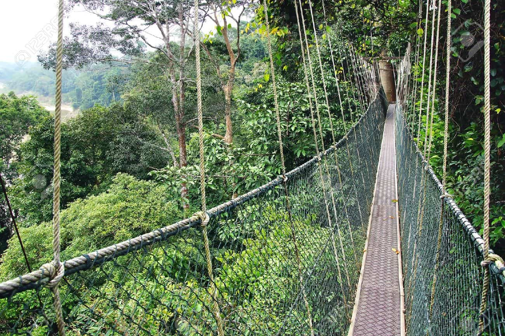

Ahmad & Family Tours
Certified Eco-Operator
Region: Taman Negara
Specializes in deep jungle wildlife tracking, medicinal plant identification, and zero-footprint camping.
Connect directly with local experts. Every guide listed here has passed our strict greenwashing audit to ensure authentic, zero-footprint conservation practices.

Region: Taman Negara
Specializes in deep jungle wildlife tracking, medicinal plant identification, and zero-footprint camping.

Region: Mount Kinabalu
Led by indigenous Kadazan-Dusun climbers. Focuses on safe, high-altitude trekking while preserving sacred mountain trails.

Region: Sipadan & Mabul
Local Bajau divers offering small-group marine encounters. Actively involved in coral restoration and anti-poaching efforts.